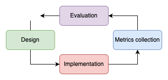

Advisor: Prof. Dr. Eduardo Guerra (unibz) [eduardo.guerra@unibz.it]
Co-advisor: MSc. João Francisco Lino Daniel (unibz) [joao.daniel@alumni.usp.br]
The concept of building applications with a set of loosely coupled services emerged in 1997 on IBM's Enterprise Java Bean (EJB). But it was only with the REST APIs grow at early 2010s that microservice were popularized as an established architecture for large systems that requires fast pace growth, continuous integration and scalability.
As a recent software architecture style, there is a lack of formal knowledge and experimentation in some areas, such as around its patterns and their API interfaces, inter-service communication and data management.
Extensibility is the capability of a component to extends its functionality to similar uses. An extensible system can help developers reduce work to implement new features, and architects reuse components to create simpler solutions.
Microservices can help with extensibility because of the concept of modularization and single-responsibility attached to each microservice. Allowing systems to apply extensibility only on key services for, and impact the whole architecture.
This work studies multiple microservices use cases, from a developer and architect perspective, exploring the concept of extensibility and others non-functional requirements, regarding services’ contracts, communication and managements.
Metrics
Metrics are a representation of an object’s characteristic as a numeric value
[1]. In association with units of measurement and thresholds, metrics are used to describe the object and also to assess it.
In software development, metrics are used to describe many aspects of a system, from objective characteristics – like response time and CPU usage, that have standards and well-defined ways of measurement –, to subjective ones – like code quality and software maintainability, which can be measured by several methods, each one of them with its own efficiency and accuracy.
The assessment made with metrics can go in different directions, such as to track if a certain goal has been achieved, or to follow if a specific requirement is being respected. In general, different metrics can be used to assess a single characteristic, but the choice depends on the goal of the analysis. For example, to represent the degree of coupling between modules A and B, we can use the static number of function calls, or we can use the dynamic number of calls per minute during execution.
Software Architecture
Software Architecture is an area of study in computer science that focus on the software structures, their benefits and drawbacks, and how to integrate them to solve problems.
The architecture of a software is what describes which set of structures are used to build a system, encompassing its components, principles, responsibilities and design decisions. It doesn't necessarily establish implementation details, like technologies, design patterns and intra-component architecture, it depends on the level of detail and how big is the whole structure. However, all decisions taken in the architecture should be all necessary to reason about the software and its implementation.
Non-functional Requirements
When defining a software's architecture, there are a set of requirements that should be fulfilled, so the software solves the problem it was intended to. These requirements can be split in two groups: functional and non-functional. Functional requirements describe what the software should do, the behavior. Non-functional requirements define how this should be done, the qualities.
Non-functional requirements should be as well-defined as the functional ones. For example, a live chat API should allow two users to interact with each other at the same time, with a maximum 500ms delay to message deliver. This not only defines what is the API functionality, but also that it should be performant, and this requirement is as important as the functionality, since an API with slow response time does not fully solve the problem.
Extensibility
Quality of what can be extended
[2]. In the context of software, a system or architecture can be said extensible if it is able to receive new features without requiring major changes.
Features are capacities added to a component that doesn't change its functionality. Extensibility should be achieved without violating the single-responsability principle.
For example, a component designed to translate text from portuguese to english, can be said extensibile if it doesn't require major changes to implement translation from portuguese to spanish. The system does a new thing, however it still with the single functionality of translating.
Microservices
In the past, the development of a software system could be explained as a line, with planning, beginning and an ending delivery. With technology advances, continuous delivery emerged, turning this process into a cycle that can be repeated without never reaching a final delivery. In this scenario, companies started to have problem scaling large monolithic applications, because they require knowledge about all the system for changes, this knowledge usually ended up concentrated in a few developers that took part on the building of the application. This leads to business changes being held by engineering limitation. Microservice comes up as a solution that allow fast pace development in large systems and fits better the necessities of a fast delivery market.
Microservice is a software architecture style, in which, the responsibilities and business functionalities are split into independently deployable components, each component has its own codebase and is called a "microservice"
[3]. These services communicate through APIs, Application Programming Interfaces, these interfaces work as contracts, containing rules, protocols and tools, that other services may follow to be able to communicate with it.
Microservices components follow the rule of single responsibility, each component is responsible for doing only one thing and must do it well. This allows organizations to split the concerns in multiple cores, each with its own sets of services where the ramp up and specialization is easier, since it can be focused on specific area. For example, a common split of teams on big techs is in functional areas: mobile client, web client, data management, back-end development, etc.
It also allows splitting the decision in multiple layers. While a software architect may be responsible for defining which services take part of a certain flow, and what are their responsibilities, the technical and design decisions of implementation can be made by the maintainer development team, since each component is technology independent.
Another advantage of microservice is scalability and extensibility. As components are independent, you can cut cost by scaling only the required components at a time. It also means that, adding a new feature can be as easy as creating a new independent service and attaching it to the architecture.
However, this architecture relies on inter-components contracts, which means that any break in a contract can lead to a cascade of unwanted behaviors that require lots of tracking and measurements to debug. It also requires an increase in design complexity and operational cost due to the necessity of handling multiple services, their deployment and integration.
This work compares multiple microservice patterns, taking in consideration designing, developing, and execution. It also explores more about microservices metrics when comparing them in regard to extensibility.
To do so, it was done in an iterative process with solution design, architecture implementation, metrics collection and evaluation, inspired by Design Science Research
[4].

During the solution design, the use case is selected and the architectures patterns in focus are designed. Them, the solution is implemented, and once it is finished, metrics are collected in regards to development experience during implementation and quantitative values during experiment ran. At the end of the iteration, the patterns are compared and the metrics collected are evaluated.

It was done in two iterations, each iteration was an use case where the use of microservices is required and extensibility is a non-functional requirement.
The first iteration was the Data Provider study case, it contained 5 steps: the scenarios definitions, the base implementation, implementing a new feature to test extensibility, collect metrics and evaluation.
The second iteration was the OpenDataHub study case (or Data Ingestion) and contained 4 steps: the architecture definition, implementation, metrics collection and evaluation.
[1] Lanza, M., & Marinescu, R. (2007, May 16). Object-Oriented Metrics in Practice. Springer Science & Business Media.
[2] Ford, N., Parsons, R., & Kua, P. (2017, September 18). Building Evolutionary Architectures. “O’Reilly Media, Inc.”
[3] Newman, S. (2015, February 2). Building Microservices. “O’Reilly Media, Inc.”
[4] Runeson, P., Engström, E., Storey, MA. (2020). The Design Science Paradigm as a Frame for Empirical Software Engineering. In: Felderer, M., Travassos, G. (eds) Contemporary Empirical Methods in Software Engineering. Springer, Cham.